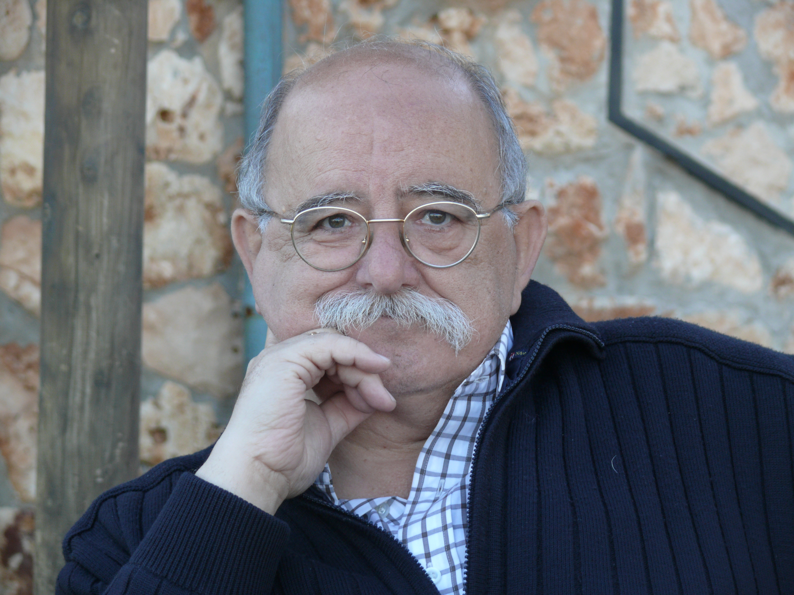

Información
Acerca del archivo

Esta página web es una recopilación de distintos extractos que Carlos Villar obtuvo de las grabaciones de sus entrevistas sobre los diferentes aspectos de su amado Campo de Calatrava.
Trabajaba en torno a la idea del hombre memoria, en una época en la que tardamos milisegundos en transmitir información y vivimos altamente conectados con el mundo, aunque hasta hace poco no era así. El concepto de cultura es amplio y, durante siglos, ha sido el encargado de preservar las comunicaciones orales y las transmisiones de conocimiento de generación en generación.
Las imágenes han sido extraídas de dichas grabaciones. Si usted o alguna organización está interesada en acceder a las grabaciones completas o a más material, no dude en ponerse en contacto a través del correo electrónico: hombre-memoria-carlosbvillar@mail.com.